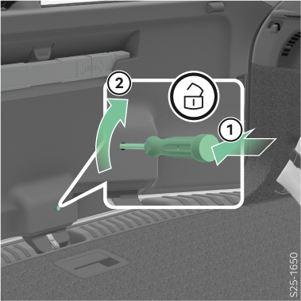

Si le capot du coffre ne s’ouvre pas, un déverrouillage manuel de l’intérieur est possible de la manière suivante :

Insérer un tournevis dans la fente du revêtement du clapet.
Déverrouiller le volet en le déplaçant dans le sens de la flèche.